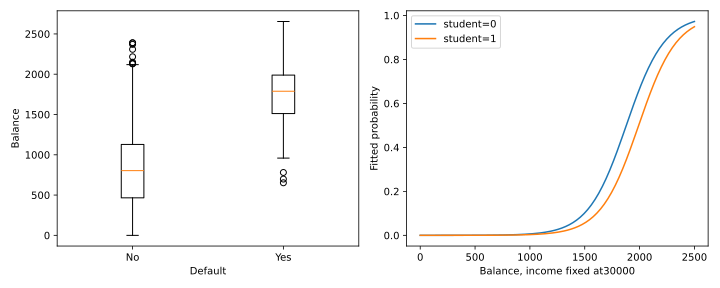

IIT Hyderabad · NPTEL · Independent study edition
Odds ratios and logistic regression
17.1 Odds describe a different ratio from risk
A binary prediction task asks for the probability of a specified outcome, such as default or an upward market move. Encoding that outcome as one and its complement as zero makes the positive event explicit. The encoding is part of the model contract: reversing it changes the sign of log-odds coefficients and reverses the interpretation of a reported odds ratio.
For an event with probability $p\in(0,1)$, its odds are $p/(1-p)$. For two groups with outcome probabilities $p_1,p_0$, the risk ratio is $p_1/p_0$, while the odds ratio is $[p_1/(1-p_1)]/[p_0/(1-p_0)]$. A threefold odds ratio is not generally a threefold probability ratio. The two can be close when both outcome probabilities are small, but that is an approximation with conditions.
For a table with rows $X=1,0$ and columns $Y=1,0$, write cell counts as $\begin{pmatrix}a&b\\c&d\end{pmatrix}$. The within-row estimated outcome odds are $a/b$ and $c/d$, so the cross-product estimate is $\widehat{OR}=ad/(bc)$. The source's illustrative counts correspond to $(a,b,c,d)=(688,650,21,59)$ and give $\widehat{OR}=2.973772894$. These are reproduced source arithmetic, not newly verified epidemiological evidence or a treatment recommendation.
Under an appropriate large-sample count model with positive cell counts, a delta-method approximation gives $\operatorname{SE}(\log\widehat{OR})\approx\sqrt{1/a+1/b+1/c+1/d}$. One way to see its origin is to approximate independent Poisson cell-count variances by their means. The derivative of $\log a-\log b-\log c+\log d$ with respect to each count is its reciprocal with the corresponding sign; multiplying squared derivatives by the count variances and summing gives the expression. The laboratory obtains $0.259923354$. This is an asymptotic standard error; zero or sparse cells require a different treatment rather than dividing by zero.
The odds ratio has a useful case-control sampling property under explicit conditions. Suppose inclusion depends on the outcome alone, with positive inclusion probabilities $s_1,s_0$ for $Y=1,0$. Every population joint probability in the first outcome column is multiplied by $s_1$, and every probability in the other column by $s_0$, followed by a common normalization. The multipliers cancel in the cross-product ratio. This explains invariance to that particular outcome-dependent sampling scheme. Arbitrary selection depending jointly on exposure and outcome need not preserve the ratio, and population risks cannot generally be read directly from a case-control table.
Pearson correlation is mathematically defined for nonconstant binary indicators; it is often called the phi coefficient. The source's motivation should not be read as a theorem that binary correlation or a least-squares fit is impossible. For binary outcomes, a linear-probability model can be fitted, but it may predict outside $[0,1]$ and has conditional variance $p(1-p)$. Logistic regression supplies a probability-valued mean model with a different likelihood. Multicategory responses require an appropriate extension, not merely declaring a binary model to have more classes.
Source: Odds Ratio, 10:26, and log-odds inference, 22:07. The sampling and interpretation conditions are made explicit here.
17.2 A conditional probability model and its likelihood
Let $Y_i\in\{0,1\}$ be independent conditional on predictor vectors $\mathbf x_i\in\mathbb R^q$, including an intercept. Define $\pi_i=P(Y_i=1\mid\mathbf x_i)$. The binary logistic model sets $\log[\pi_i/(1-\pi_i)]=\mathbf x_i^T\boldsymbol\beta=\eta_i$. Solving for the probability gives $\pi_i=\exp(\eta_i)/(1+\exp(\eta_i))$. This function maps every finite real predictor to a probability strictly between zero and one.
A coefficient is a change in log odds per unit change in its design coordinate. Holding all other design coordinates fixed, increasing coordinate $j$ by one multiplies the odds by $\exp(\beta_j)$. The corresponding probability change depends on the original probability. Differentiating the logistic mean gives $\partial\pi/\partial x_j=\pi(1-\pi)\beta_j$ when that coordinate enters additively without an interaction. With interactions or transformed coordinates, apply the chain rule to the full linear predictor.
The Bernoulli likelihood is $\prod_i\pi_i^{y_i}(1-\pi_i)^{1-y_i}$. Taking logarithms and substituting the logistic relation gives
$$\ell(\boldsymbol\beta)=\sum_i\{y_i\mathbf x_i^T\boldsymbol\beta-\log(1+e^{\mathbf x_i^T\boldsymbol\beta})\}.\tag{17.1}$$
For numerical evaluation, use logaddexp(0, eta) for the final logarithm; directly exponentiating a large positive predictor can overflow even when the final probability is well behaved. Differentiating once and twice yields
$$\nabla\ell=\mathbf X^T(\mathbf y-\boldsymbol\pi),\qquad \nabla^2\ell=-\mathbf X^T\mathbf W\mathbf X,\quad W_{ii}=\pi_i(1-\pi_i).\tag{17.2}$$
The derivative $d\pi_i/d\eta_i=\pi_i(1-\pi_i)$ supplies the weights in the Hessian. Because $\mathbf W$ is positive for finite predictors, the Hessian is negative definite when the design has full column rank. Thus a finite stationary point is a unique maximizer. This conditional statement does not guarantee that a finite maximizer exists.
Newton iteration solves an information-weighted normal equation and updates $\boldsymbol\beta_{new}=\boldsymbol\beta+(\mathbf X^T\mathbf W\mathbf X)^{-1}\mathbf X^T(\mathbf y-\boldsymbol\pi)$. It is also expressible as iteratively reweighted least squares using working response $z_i=\eta_i+(y_i-\pi_i)/[\pi_i(1-\pi_i)]$. The laboratory implements a direct Newton fit with a likelihood-increasing line search and verifies it against the unpenalized binomial GLM. Finite-difference checks verify the score independently.
Under complete separation, a coefficient direction can place all positive outcomes on one side and all negative outcomes on the other. Moving indefinitely along that direction drives the likelihood toward its supremum without reaching a finite coefficient vector. Extremely large coefficients and standard errors may then indicate a structural estimation problem rather than strong evidence for a precise effect. Penalization or specialized bias-reduction methods can yield finite estimates, but they change the estimation procedure and must be identified.
Source model: Logistic Regression 1, 03:50. Python uses statsmodels GLM with an explicitly added intercept, binomial family and logit link, avoiding unintended classification penalties.
17.3 Deviance, coefficient tests, and what a p-value does not say
The estimated information matrix $\mathbf X^T\widehat{\mathbf W}\mathbf X$ gives the usual inverse-information covariance approximation at a finite fitted maximum. Under regular large-sample conditions, a prespecified coefficient's standardized estimate is approximately normal. The Wald statistic for $\beta_j=0$ is $\widehat\beta_j/\operatorname{SE}(\widehat\beta_j)$. This is not an exact finite-sample normal result, and it can perform poorly near separation or with sparse information.
The likelihood-ratio statistic for nested models is $2(\widehat\ell_F-\widehat\ell_R)$, where the subscripts identify full and reduced maximized likelihoods on the same observations. Its chi-square reference with the difference in parameter counts is asymptotic under regularity, including an identified interior null and finite fits. A small improvement or a large p-value does not prove the coefficients are zero. It measures the incompatibility with the tested null through that chosen statistic.
Deviance compares a fitted model with a saturated model, which can reproduce each observed response: $D=2(\ell_{sat}-\widehat\ell)$. For independent individual Bernoulli observations, the saturated log likelihood is zero under the convention $0\log0=0$, so deviance reduces to $-2\widehat\ell$. Grouped binomial counts contain a different saturated constant; the general definition should be retained. Null deviance uses the intercept-only fit, while residual deviance uses the specified fitted model. Their difference is the likelihood-ratio improvement, not a new form of training accuracy.
A binary regression still has residuals, for example $y_i-\widehat\pi_i$, as well as Pearson and deviance residuals. Their existence does not require a Gaussian response. Ordinary linear-model $R^2$ is not the standard likelihood summary here, although several distinct pseudo-$R^2$ quantities can be defined. A model can improve log likelihood while making the same thresholded classifications. Probability estimation and discrete decisions are different evaluation tasks.
Source: Logistic Regression 2, 06:05 for output interpretation and 09:25 for deviance.
17.4 The Default example: marginal and conditional comparisons
The source uses ISLR's Default dataset. Its package documentation explicitly describes it as simulated, with 10,000 customer records. It is a teaching dataset rather than newly verified operational credit information. The Python conversion preserves all rows and encodes default=Yes as the positive outcome and student=Yes as one, matching R's stated factor references.
The balance-only fit has intercept $-10.65133062$ and slope $0.005498916935$. Its probabilities at balances 1,000 and 2,000 are $0.005752145$ and $0.585769370$. These are probabilities from the nonlinear inverse link, not values obtained by multiplying a balance by the slope. A change of one balance unit changes log odds by the slope; the same balance increase produces different absolute probability changes at different starting balances.
The student-only coefficient is $0.404887081$, with fitted default probabilities $0.029195011$ for nonstudents and $0.043138587$ for students. After adjusting for balance and income, the student coefficient becomes $-0.646775808$. Those two comparisons condition on different information. A reversal does not by itself prove that becoming a student causally reduces risk. Different covariate distributions, model structure and the noncollapsibility of odds ratios affect marginal and conditional comparisons. Noncollapsibility means that a conditional odds ratio can differ from its marginal counterpart even without confounding.

The adjusted model's null deviance is $2920.649711346$, residual deviance $1571.544827579$, and AIC $1579.544827579$. These values reproduce the source models. A fresh R run matches the Python coefficients, probabilities and likelihood summaries to numerical tolerance. The independent Newton fit and likelihood derivative checks verify the mathematical implementation; they do not certify the substantive model for a real lending population.
Source: Default implementation, 08:52, and adjusted model, 22:19. Data status: ISLR Default documentation.
17.5 Smarket: probability fitting is not a trading result
The source's Smarket example uses 1,250 historical observations and models upward direction with five lagged returns and trading volume. The conversion excludes the current response-defining return Today and preserves the specified six predictors. In a real prediction task, every feature's availability time must also be established. A retrospective column is not automatically known when a decision would have been made.
The reproduced null deviance is $1731.174769116$, residual deviance $1727.584094203$, and likelihood-ratio improvement $3.590674913$. The asymptotic chi-square p-value for six added coefficients is $0.731869315$. The model provides little evidence of improvement by that particular in-sample test; this is not a proof that every possible forecast is useless.
At threshold $0.5$, define Up as positive. A true positive is an actual Up predicted Up; a false positive is an actual Down predicted Up. A false negative is an actual Up predicted Down. The source's spoken false-positive and false-negative descriptions are reversed, so the conversion makes row and column meanings explicit.
| Actual outcome | Predicted Down | Predicted Up |
|---|---|---|
| Down | 145 | 457 |
| Up | 141 | 507 |
Accuracy is $(145+507)/1250=0.5216$ and error rate is $0.4784$. The latter is not accuracy. Always predicting Up gives training accuracy $0.5184$. A training confusion matrix is not evidence of profitable future trading: it excludes execution costs, timing, selection, and changing distributions. The laboratory's separate authored example trains a lag-only model before 2005 and evaluates on 2005; its accuracy is $0.559523810$. This is one historical split, not a current market recommendation.
For calibrated outcome probability $p$ and fixed false-positive and false-negative costs $C_{FP},C_{FN}>0$, predicting positive has expected cost $C_{FP}(1-p)$ and negative has expected cost $C_{FN}p$. Choose positive when $p>C_{FP}/(C_{FP}+C_{FN})$. A universal threshold of one-half therefore encodes a particular symmetric-cost decision rule, not a property of logistic regression.
Source: Smarket implementation, 01:45 and confusion matrix, 19:46. Historical dataset description: ISLR Smarket documentation.
17.6 Exercises with worked solutions
Conceptual: odds versus probability. Does multiplying outcome odds by a fixed factor multiply outcome probability by the same factor?
Solution
No. If original probability is $p$ and odds multiply by $r>0$, the new probability is $rp/(1-p+rp)$. The probability ratio is $r/(1-p+rp)$, which depends on $p$. It approaches $r$ when the relevant probabilities are sufficiently small, but is not generally equal to it.
Conceptual: a fitted probability. Why is a least-squares binary fit possible even though logistic regression is often preferable?
Solution
Least squares can minimize squared error for numerical zero-one responses. Its fitted values need not remain in the probability interval, and Bernoulli variance changes with the conditional mean. Logistic regression directly models a bounded probability and fits a Bernoulli likelihood. The difference concerns model assumptions and behavior, not the mathematical impossibility of drawing or fitting a line.
Derivation: the information matrix. Derive the Hessian of the logistic log likelihood and state the condition for strict concavity at finite coefficients.
Solution
The score is $\mathbf X^T(\mathbf y-\boldsymbol\pi)$. Differentiating $\pi_i$ gives $\pi_i(1-\pi_i)\mathbf x_i$, so the Hessian is $-\mathbf X^T\mathbf W\mathbf X$. At finite coefficients every diagonal weight is positive. For full column rank and nonzero $\mathbf u$, $\mathbf u^T\mathbf X^T\mathbf W\mathbf X\mathbf u>0$, proving strict concavity. This does not ensure that the likelihood attains a finite maximum under separation.
Derivation: the intercept score. What in-sample identity holds at an unpenalized finite maximum when the model includes an intercept?
Solution
The intercept component of the score is $\sum_i(y_i-\widehat\pi_i)$. Setting it to zero gives equal mean fitted probability and observed positive fraction. The laboratory asserts that identity for Default. It is an in-sample likelihood equation and does not guarantee calibration on new data or inside every subgroup.
Computational: the source confusion matrix. Identify false positives and false negatives in Table 17.1 and calculate accuracy and error rate.
Solution
With Up positive, false positives are the 457 actual Down observations predicted Up; false negatives are the 141 actual Up observations predicted Down. Correct predictions total 652, giving $652/1250=0.5216$. The remaining 598 give error $0.4784$. The Python output and a fresh R table match these counts exactly.
Computational: a cross-language conversion. Which settings must remain fixed when translating the Default adjusted model?
Solution
Preserve all rows, the No/Yes response orientation, the No reference for student, the intercept, raw balance/income units, the binomial likelihood and logit link, and the absence of regularization. If numerical scaling is used internally, transform coefficients back before comparison. Verify likelihood, fitted probabilities and coefficient tolerances, not just classification accuracy. The laboratory does this and independently checks its Newton implementation.
Python laboratory
Run labs/ch17.py from the course folder.
Data and figure paths, when used, are resolved by the program. Dependencies are listed in
requirements.txt.
Complete runnable Python source
"""Convert ISLR Default and Smarket binomial-logit demonstrations."""
from pathlib import Path
import matplotlib
import numpy as np
import pandas as pd
import statsmodels.api as sm
from scipy import stats
from scipy.special import expit
from sklearn.metrics import confusion_matrix
import matplotlib.pyplot as plt
matplotlib.use("Agg")
def likelihood(beta, design, target):
linear = design @ beta
return target @ linear - np.logaddexp(0, linear).sum()
def newton_logit(design, target):
beta = np.zeros(design.shape[1])
for _ in range(100):
probability = expit(design @ beta)
gradient = design.T @ (target - probability)
weight = probability*(1 - probability)
information = design.T @ (weight[:, None]*design)
step = np.linalg.solve(information, gradient)
scale = 1.
previous = likelihood(beta, design, target)
while likelihood(beta + scale*step, design, target) < previous:
scale /= 2
if scale < 1e-10:
raise RuntimeError("Logistic Newton line search failed")
beta += scale*step
if np.max(abs(scale*step)) < 1e-9:
return beta
raise RuntimeError("Logistic Newton fit did not converge")
def main():
here = Path(__file__).resolve().parent
default = pd.read_csv(here / "data/ch17-default.csv")
y = (default["default"] == "Yes").to_numpy(dtype=float)
student = (default["student"] == "Yes").to_numpy(dtype=float)
balance = default["balance"].to_numpy()
income = default["income"].to_numpy()
balance_design = sm.add_constant(balance)
balance_fit = sm.GLM(
y,
balance_design,
family=sm.families.Binomial()).fit(
tol=1e-12)
student_design = sm.add_constant(student)
student_fit = sm.GLM(
y,
student_design,
family=sm.families.Binomial()).fit(
tol=1e-12)
full_design = np.column_stack(
[np.ones(len(y)), student, balance/1000, income/10000])
full = sm.GLM(y, full_design, family=sm.families.Binomial()).fit(tol=1e-12)
independent = newton_logit(full_design, y)
assert np.allclose(independent, full.params, atol=1e-7)
raw_coefficient = full.params / np.array([1, 1, 1000, 10000])
print("ISLR Default is simulated; rows:",
len(default), "defaults:", int(y.sum()))
print(
"Balance-only coefficients:",
np.array2string(
balance_fit.params,
precision=9))
prediction = balance_fit.predict([[1, 1000], [1, 2000]])
print("Balance1000/2000 default probabilities:",
np.array2string(prediction, precision=9))
print(
"Student-only coefficients:",
np.array2string(
student_fit.params,
precision=9))
print("Student0/1 marginal probabilities:",
np.array2string(student_fit.predict([[1, 0], [1, 1]]), precision=9))
print("Adjusted coefficients (const,student,balance,income):",
np.array2string(raw_coefficient, precision=9))
print(f"Default null deviance={full.null_deviance:.9f}, "
f"residual={full.deviance:.9f}, AIC={full.aic:.9f}")
print("Independent Newton/GLM coefficient agreement: passed")
assert np.isclose(full.fittedvalues.mean(), y.mean(), atol=1e-10)
probe = np.array([-0.5, 0.2, 0.8, -0.1])
probability = expit(full_design @ probe)
analytic = full_design.T @ (y - probability)
h = 1e-5
numeric = []
for direction in np.eye(4):
upper = likelihood(probe + h*direction, full_design, y)
lower = likelihood(probe - h*direction, full_design, y)
numeric.append((upper - lower) / (2*h))
numeric = np.array(numeric)
assert np.allclose(analytic, numeric, rtol=1e-6, atol=1e-5)
print("Finite-difference likelihood score check: passed")
cells = np.array([[688., 650.], [21., 59.]])
odds_ratio = cells[0, 0]*cells[1, 1] / (cells[0, 1]*cells[1, 0])
standard_error = np.sqrt(np.sum(1/cells))
print(f"Source illustrative table OR={odds_ratio:.9f}, "
f"logOR SE={standard_error:.9f}")
market = pd.read_csv(here / "data/ch17-smarket.csv")
columns = [f"Lag{i}" for i in range(1, 6)] + ["Volume"]
market_y = (market["Direction"] == "Up").to_numpy(dtype=int)
market_design = sm.add_constant(market[columns])
fit = sm.GLM(
market_y,
market_design,
family=sm.families.Binomial()).fit(
tol=1e-12)
matrix = confusion_matrix(market_y, fit.predict() > 0.5, labels=[0, 1])
improvement = fit.null_deviance - fit.deviance
print(
"Smarket coefficients:",
np.array2string(
fit.params.to_numpy(),
precision=9))
lr_pvalue = stats.chi2.sf(improvement, 6)
print(f"Smarket null deviance={fit.null_deviance:.9f}, "
f"residual={fit.deviance:.9f}, LR={improvement:.9f}, "
f"p={lr_pvalue:.9f}")
print("Confusion matrix rows=actualDown/Up, "
"columns=predictedDown/Up:\n", matrix)
accuracy = np.trace(matrix) / matrix.sum()
error = 1 - accuracy
print(f"Training accuracy={accuracy:.6f}, error={error:.6f}, "
f"always-Up={market_y.mean():.6f}")
assert np.array_equal(matrix, [[145, 457], [141, 507]])
train = market["Year"] < 2005
lag_design = sm.add_constant(market[["Lag1", "Lag2"]])
held_fit = sm.GLM(market_y[train], lag_design[train],
family=sm.families.Binomial()).fit(tol=1e-12)
held_prediction = held_fit.predict(lag_design[~train]) > 0.5
held_matrix = confusion_matrix(
market_y[~train], held_prediction, labels=[0, 1])
print("Authored chronological2005 lag-only confusion:\n", held_matrix)
held_accuracy = np.trace(held_matrix) / held_matrix.sum()
print(f"Chronological2005 accuracy={held_accuracy:.9f}")
figure, axes = plt.subplots(1, 2, figsize=(10, 4))
axes[0].boxplot([balance[y == 0], balance[y == 1]],
tick_labels=["No", "Yes"])
axes[0].set(xlabel="Default", ylabel="Balance")
grid = np.linspace(0, 2500, 150)
for flag in [0, 1]:
design = np.column_stack([np.ones(len(grid)), np.full(len(grid), flag),
grid/1000, np.full(len(grid), 3.)])
axes[1].plot(grid, full.predict(design), label=f"student={flag}")
axes[1].set(
xlabel="Balance, income fixed at30000",
ylabel="Fitted probability")
axes[1].legend()
figure.tight_layout()
figure.savefig(here / "ch17-default.svg")
plt.close(figure)
if __name__ == "__main__":
main()
Recorded execution output
ISLR Default is simulated; rows: 10000 defaults: 333
Balance-only coefficients: [-1.065133062e+01 5.498916935e-03]
Balance1000/2000 default probabilities: [0.005752145 0.58576937 ]
Student-only coefficients: [-3.504127762 0.404887081]
Student0/1 marginal probabilities: [0.029195011 0.043138587]
Adjusted coefficients (const,student,balance,income): [-1.086904521e+01 -6.467758082e-01 5.736505266e-03 3.033450119e-06]
Default null deviance=2920.649711346, residual=1571.544827579, AIC=1579.544827579
Independent Newton/GLM coefficient agreement: passed
Finite-difference likelihood score check: passed
Source illustrative table OR=2.973772894, logOR SE=0.259923354
Smarket coefficients: [-0.126000259 -0.073073747 -0.042301345 0.011085108 0.009358938
0.010313069 0.135440661]
Smarket null deviance=1731.174769116, residual=1727.584094203, LR=3.590674913, p=0.731869315
Confusion matrix rows=actualDown/Up, columns=predictedDown/Up:
[[145 457]
[141 507]]
Training accuracy=0.521600, error=0.478400, always-Up=0.518400
Authored chronological2005 lag-only confusion:
[[ 35 76]
[ 35 106]]
Chronological2005 accuracy=0.559523810